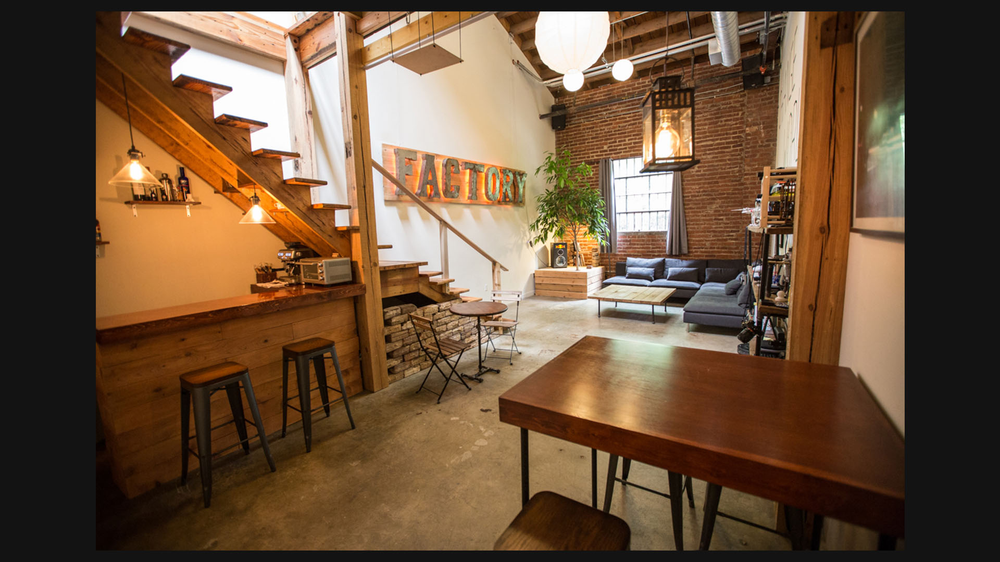
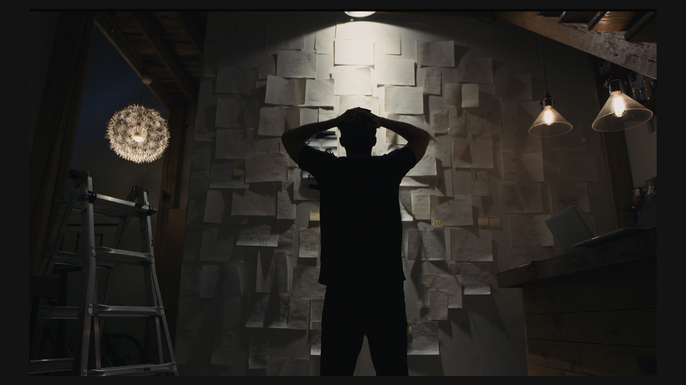
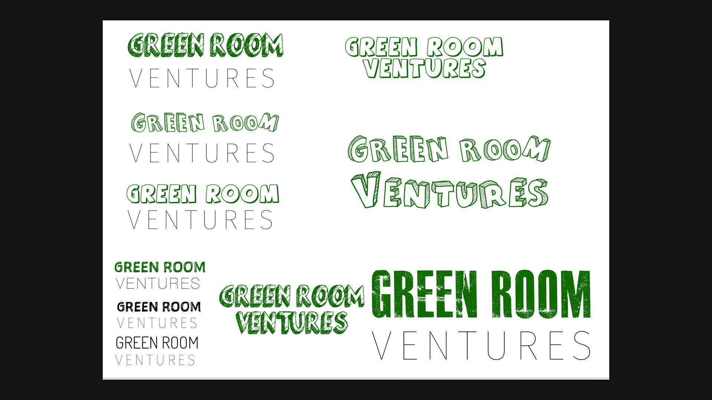

2015 / studio-lab / prototypes / systems
A physical and digital lab for turning strange, useful ideas into artifacts: health apps, collaboration platforms, hardware studies, interactive installations, furniture, and early intelligent-interface concepts.

The Factory was built around the belief that digital products, physical objects, and research tools all benefit from the same creative pressure: make the idea visible, make it testable, and let the material teach you what the concept is missing.
Projects moved from healthcare tools and collaboration platforms into motion graphics, 3D printing, EEG studies, VR experiments, espresso-machine concepts, and environmental prototypes. It was less a company category than a way of working.




The Factory is where product design, software engineering, health research, media, and physical craft started to collapse into one practice. SelfCare and ExCollectives grew from this same environment.